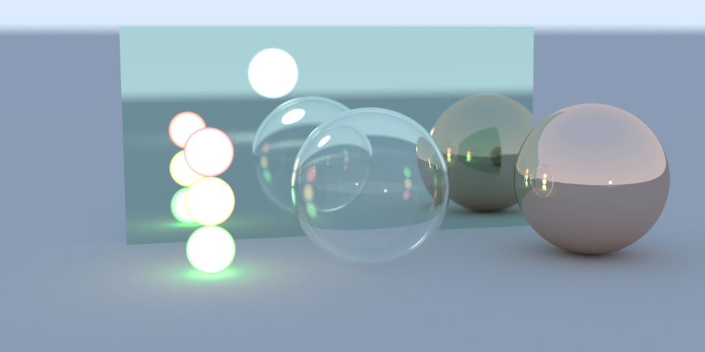
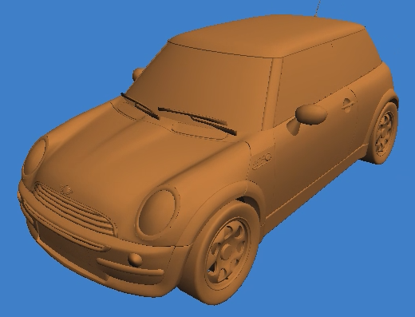

Graphics
Ray Tracer In C (RTIC)

RTIC is one of many ray tracers I have made; this one had its focus on being written in pure C (currently C17) with minimal dependencies.
To make my C life a little easier, I only used 2 libraries: Sean Barrett's Dynamic Storage for arrays, and Image Write for PNG output.
I also experimented with code style, from the more common type renaming to the unconventional extra whitespace and alignment.
The image you see was rendered using the example world file provided, at 32 samples per pixel.
Audio Visualiser

This was a cool project I worked on under my course leader at university; looking at different ways of visualising audio. I was the sole developer, from a blank window to adding shader support and handling audio input (and output). I modeled it after ShaderToy, making use of modern C++, and only minimal libraries:
This image is of a later prototype shader I wrote, using the audio FFT to show frequency information. I visualised it as a spiral, lining up the octaves, which suits music visualisation very well.
You can see the spiral highlights 3 different areas (around the middle bands, roughly 1, 4, 10 o'clock), which indicates a triad chord, and you can even see the notes resonating through multiple octaves, where the spikes are pointing outward. Songs like Rocket Man by Elton John with its guitar slide in the chorus, you could see it sliding up and away around the spiral!
(As a side project I have started remaking it, I do not currently have a link to source "yet")
Graphics Playground

This is an example playground working through some basic steps of setting up different graphics APIs (OpenGL, Vulkan).
It's using the Odin programming language (other languages are available), this is just personal preference, as it allows me to focus on each step I want to highlight, and avoids any extra cruft.
I've used this several times as reference material to provide help and support to others who have had questions about getting up and running with both SDL/GLFW, and OpenGL/Vulkan.
The image you see here is of a model I loaded with a custom OBJ loader, rendered using every stage that is highlighted in the examples before it. Plus it's a pretty cute Mini Cooper.